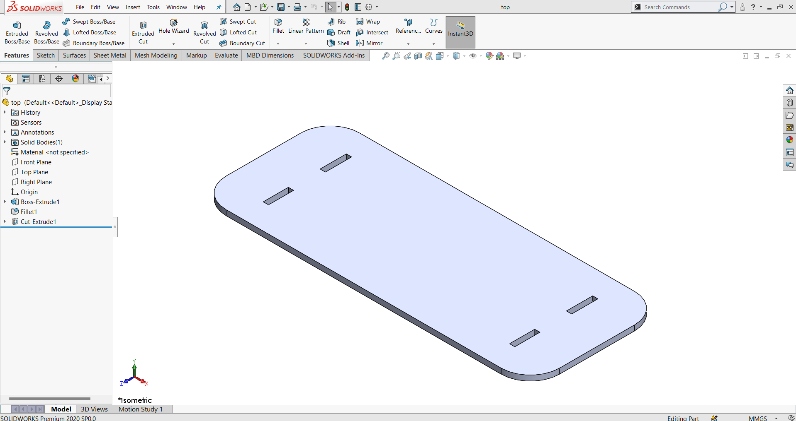
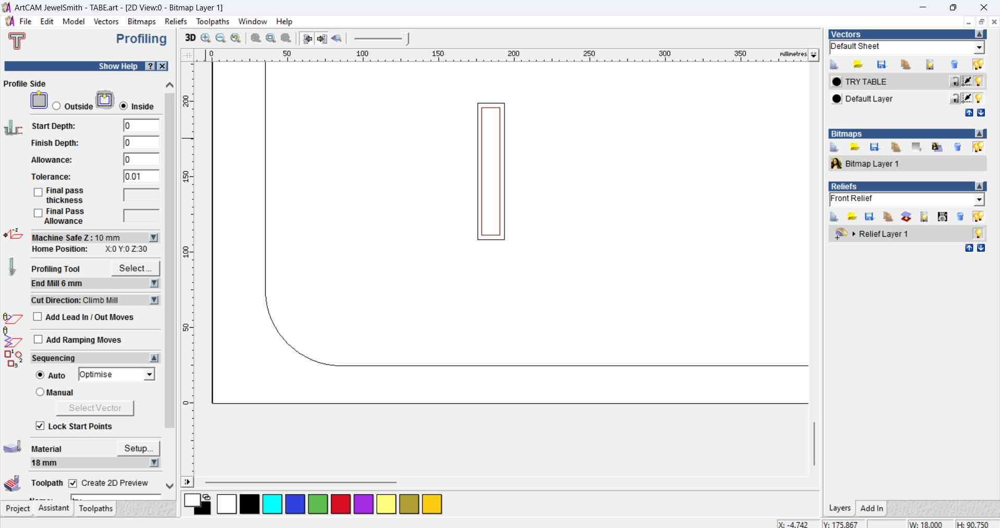

Week 07
Computer-Controlled Machining
Individual Assignment
Make a design, mill and assemble something big, don’t use fasteners or glue, and include curved surfaces
Concept Design :
Design and fabricate a bench for two people. The design with a logo on top and joins without any fasteners.
The standard sheet of plywood is 4x8 feet in size with a thickness of 18mm.
2D design development for CNC milling production
- The 3D model is generated using SolidWorks and then exported as a 2D DXF file.
- Then 2D files are imported into CoralDraw to create the nesting for the milling process.
Design Using SolidWorks
 Top part of the bench |
Side panel for the bench |
Center support for the bench |
Complete assembly of the bench |
Design using CorelDRAW
|
|
|
|
Save the file as DXF format to import into ArtCAM |
To generate a 2D cutting path, we used ARTCAM
Steps to generate the toolpath
Create a new file |
|
Import the DXF file generated from Coraldraw |
|
Import DXF file into ArtCAM with workpiece dimension as 4x8 Feet and thickness 18mm |
|
Selecting the 3mm ball nose milling bit |
|
Create outer toolpath with 6 mm drill bit as a cutting tool |
|
Export the tool path |
|
Create an inner toolpath with a 6 mm drill bit as the cutting tool
|  |
Complete the toolpath and export the cutting path file |
|
Create an inner clearance area for the logo to a depth of 5 mm |
|
CNC Wood Routing Machine:
Machine Parameters :
X-Y Axis Working Area | 1300 x 2500 mm |
|
Z Axis Working Area | 300 mm |
Spindle Power | 3.5 kW |
Model | 1325 Series |
Job Material | Wood, MDF, PVC, Foam Board, Acrylic, Plywood, HDF, Sign Board |
Spindle Speed | 18000 RPM |
X-Y Movement | Rack & Pinion |
Z movement | Ball Screw |
Command Code | G Code .U00 |
Driven Motor | Stepper Motor |
Control System | Digital Signal Processor (DSP) |
Machine Weight | 500 kg |
Country of Origin | Made in India |
A CNC router can be used in the production of many different items, such as door carvings, interior and exterior decorations, wood panels, sign boards, wooden frames, moldings, musical instruments, furniture, and so on. In addition, the CNC router helps in the thermoforming of plastics by automating the trimming process. CNC routers can help ensure part repeatability and sufficient factory output.
Our provided Customized CNC Router Machine is developed using the utmost quality basic material and advanced techniques by our professionals as per the predefined quality norms. In addition to this, it is tested by a team of quality controllers in order to dispatch an excellent machine to valued customers. Our patrons can avail this customized CNC Router Machine from us in a stipulated time frame at nominal rates. Due to all, we are acclaimed as a noted Supplier, Manufacturer, and Distributor.
Application:
Wooden Door, Wooden Carving Gift Articles, MDF, Plywood, PVC, Foam Guards, Waving Boards, 2D-3D Carving, Indoor and outdoor signs.
imagescc of the wood-working lab
Fixing the tool bit |
|
Clamps to hold the plywood ensure the minimum edge is held securely and does not disturb the tool path. |
The teach pendant is used to control spindle movement and all other related controls. Using the teach pendant align the tool to the origine of the work piece. |

Always run the engrave first; here, a logo is engraved in the wood. |
Then run the inner cut toolpath. |
And finally, run the outer toolpath so that the inner cut aligns. |
|
A few helping hands, aways use wood working tools. |
|
|
|
Working files link: LINK
<< Back to Home